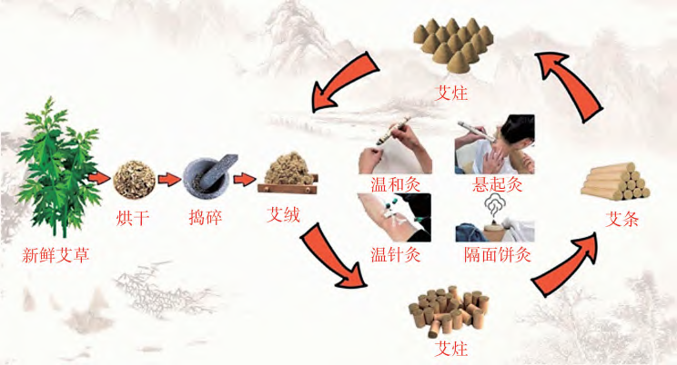
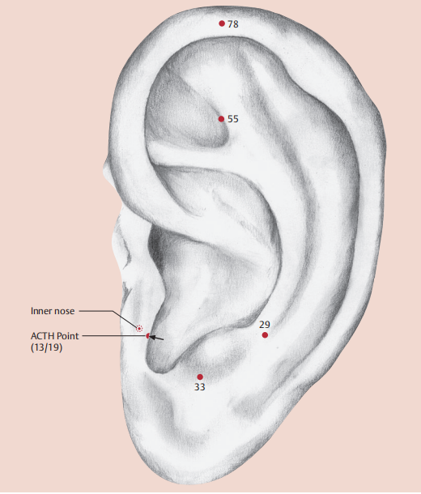

中医防治方法是按治疗途径可分为外治、内治两大类。
The treatment and prevention of traditional Chinese medicine can be divided into external treatment and internal treatment.
内治法(Internal treatment) 内服（口服）中药 (Oral Chinese Herbal Medicine)、食疗(dietary therapy)
外治法(External treatment) 常用的中医特色疗法/中医适宜技术有：针刺法、指压（穴位按压）、艾灸、火罐疗法、中草药外用、耳穴疗法、推拿和运动疗法(太极、八段锦、气功)。 The common therapies(Appropriate health technology of Tradtional Chinese Medcine) include: Acupuncture, acupressure, moxibustion, cupping，Chinese Herbal Medicine for external use, auricular therapy, tui na(massage) and exercises (tai chi， baduan jin, and qigong)
特点(Characteristic) 简(Easy)、便(Convenient)、效(Effective)、廉(Inexpensive)
 中医的各种治疗手段 - 《人体使用手册》 - 中医世家
中医的各种治疗手段 - 《人体使用手册》 - 中医世家
内治法(Internal treatment) 内服（口服）中药 (Oral Chinese Herbal Medicine)、食疗(dietary therapy)
外治法(External treatment) 常用的中医特色疗法/中医适宜技术有：针刺法、指压（穴位按压）、艾灸、火罐疗法、中草药外用、耳穴疗法、推拿和运动疗法(太极、八段锦、气功)。 The common therapies(Appropriate health technology of Tradtional Chinese Medcine) include: Acupuncture, acupressure, moxibustion, cupping，Chinese Herbal Medicine for external use, auricular therapy, tui na(massage) and exercises (tai chi， baduan jin, and qigong)
特点(Characteristic) 简(Easy)、便(Convenient)、效(Effective)、廉(Inexpensive)

(图)灸法(Moxibustion)

(图)耳穴疗法(Auricular therapy)